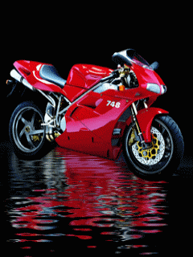
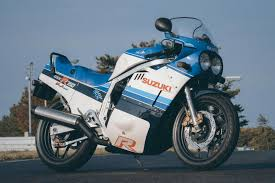
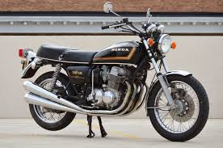
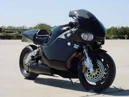

MotosMax
Durante muchos años una moto deportiva era una moto a la que se le había eliminado los componentes innecesarios para rodar en circuito, de esta manea, las preparaciones podían ser muy peregrinas. El otro inconveniente era que las carreras se hacían por la calle, con escasas medidas de seguridad y en ocasiones consecuencias desastrosas.
La cilindrada tampoco nos permitía clasificar las motos, ya que una 1000 cc podía ser utilizada para los viajes familiares o para recorrer las precarias carreteras de la época. Además en el Campeonato del Mundo, la moto más grande que competía era una 500cc.



